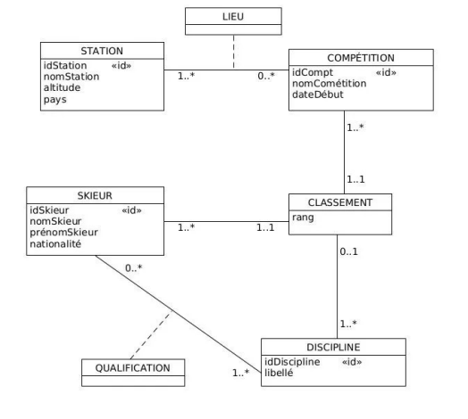

Aperçu du projet
🎯 Mission
Concevoir et exploiter une base de données relationnelle complète pour gérer les compétitions de ski alpin, avec modélisation MERISE et requêtes SQL avancées.
👥 Équipe
Groupe de 3 : Lucas Lafosse, Donovan Prevost, Joshua Hermilly
📊 Résultats
7 tables avec contraintes d'intégrité
20+ requêtes complexes avec jointures
Vues et fonctions SQL avancées
Présentation du projet
Cette SAE (Situation d'Apprentissage et d'Évaluation) nous a permis de mettre en pratique nos connaissances en bases de données relationnelles. Le projet portait sur la conception et l'exploitation d'une base de données pour gérer les informations liées aux compétitions de ski alpin.
Nous avons travaillé en équipe de 3 personnes (Lucas Lafosse, Donovan Prevost, Joshua Hermilly) pour concevoir un modèle de données cohérent, implémenter la base en SQL et réaliser des requêtes complexes pour exploiter les données.
🎯 Objectifs
- Concevoir un modèle de données relationnel
- Implémenter une base de données en SQL
- Créer des requêtes d'exploitation complexes
- Travailler en équipe sur un projet technique
🛠️ Technologies utilisées
- PostgreSQL pour la base de données
- SQL pour les requêtes
- Modélisation avec MERISE
- Git pour le versioning (travail collaboratif)
Modélisation conceptuelle
La première étape de notre projet était de concevoir un modèle conceptuel de données (MCD) pour représenter fidèlement le domaine des compétitions de ski alpin.
📊 Schéma MCD
🏔️ Modèle Conceptuel de Données
Entités : Station, Skieur, Competition, Discipline
Relations : Qualification, Lieu, Classement
Algèbre relationnelle
Voici quelques exemples de requêtes exprimées en algèbre relationnelle, montrant les opérations fondamentales sur notre base de données.
Sélection des stations françaises :
σpays='France'(Station)
Projection des noms de skieurs suisses :
πnomSkieur,prenomSkieur(σnationalite='Suisse'(Skieur))
Jointure : Skieurs ayant participé à Saalbach-2025 :
πnomSkieur,prenomSkieur(
Skieur ⋈idSkieur
(σnomCompetition='Saalbach-2025'(Competition) ⋈idCompt Classement)
)
Architecture de la base de données
Notre base de données modélise un système de gestion des compétitions de ski alpin avec les entités suivantes :
🏔️ Station
Stations de ski avec altitude et pays
- idStation (PK)
- nomStation
- altitude
- pays
🎿 Skieur
Informations sur les skieurs participants
- idSkieur (PK)
- nomSkieur
- prenomSkieur
- nationalite
🏆 Competition
Compétitions organisées
- idCompt (PK)
- nomCompetition
- dateDebut
⛷️ Discipline
Disciplines du ski alpin
- idDiscipline (PK)
- libelle (Descente, Super-G, Slalom...)
🔗 Relations principales
- Qualification : Relation N-N entre Skieur et Discipline
- Lieu : Relation N-N entre Competition et Station
- Classement : Relation ternaire entre Competition, Skieur et Discipline avec le rang
Réalisations techniques
1️⃣ Création des tables
Implémentation complète du schéma avec contraintes d'intégrité
-- Exemple : Table Station avec contraintes
create table station (
idStation integer primary key,
nomStation varchar(50) not null,
altitude integer not null check (altitude > 0),
pays varchar(30) not null
);2️⃣ Initialisation des données
Insertion de données réalistes pour tester la base
-- Exemple : Insertion des stations
insert into station (idStation, nomStation, altitude, pays) values
(1, 'Chamonix-Mont Blanc', 3842, 'France'),
(2, 'Valloire', 2600, 'France'),
(3, 'Val Cenis', 2800, 'France');3️⃣ Requêtes d'exploitation
Requêtes complexes avec jointures, agrégations et sous-requêtes
-- Exemple : Skieurs ayant participé à toutes les compétitions
select sk.nomSkieur, sk.prenomSkieur, sk.nationalite
from skieur as sk
inner join classement as cl on cl.idSkieur = sk.idSkieur
group by sk.idSkieur, sk.nomSkieur, sk.nationalite
having count(distinct cl.idCompt) = (select count(*) from competition);Bilan personnel
Cette SAE m'a vraiment permis de comprendre l'importance des bases de données dans les systèmes d'information. J'ai particulièrement apprécié la phase de modélisation, où il faut réfléchir à la structure optimale pour représenter les données du monde réel.
Le travail en équipe était enrichissant : nous avons dû nous coordonner pour avoir une base cohérente, notamment sur le nommage des tables et la définition des contraintes. Cela m'a fait comprendre l'importance de la documentation et des conventions dans un projet technique.
Les requêtes complexes avec jointures multiples et agrégations m'ont demandé de la réflexion, mais c'est très satisfaisant de voir qu'on peut extraire des informations pertinentes d'une base bien conçue. Cette SAE renforce ma compétence C4 (Gestion des données) et m'ouvre des perspectives sur les métiers liés aux données.